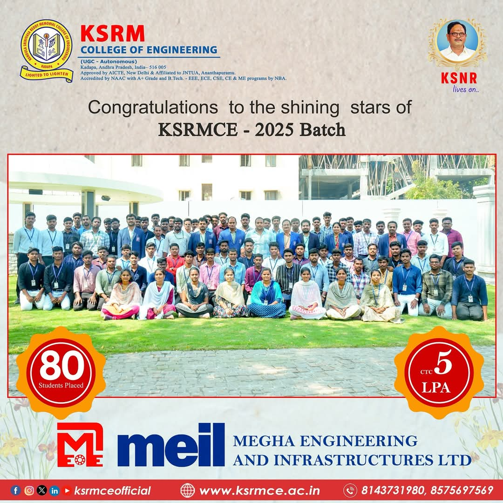

🌟 2025 Batch Placements - Project Engineers at Wipro
Institution: K.S.R.M. College of Engineering, Kadapa
Recruiter: Wipro
Position: Project Engineer
Average Salary: ₹5 LPA
This accomplishment reflects the dedication and hard work of our students, supported by the college's robust placement cell and industry collaborations.
Congratulations to all the selected students!